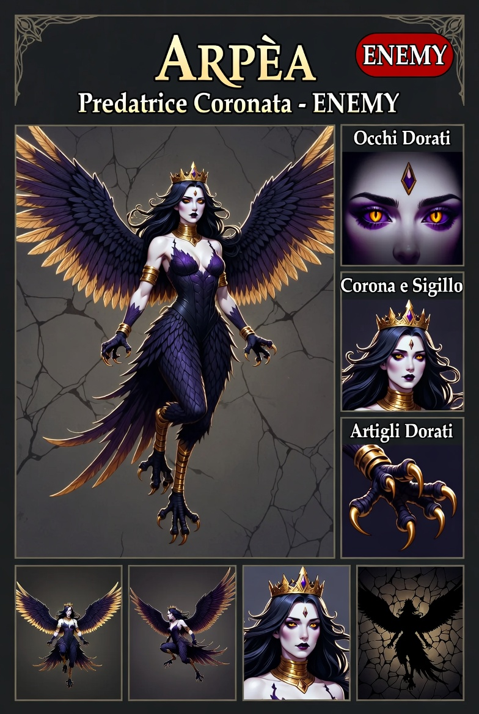

Predatrici Coronate — Prima di Illyrium
Quando ti guardano non vedono una minaccia. Vedono una scelta.
ENEMY⬡ DA IMPLEMENTARE#1E1228#C8A020#7A3050| Zona | Hex | |
|---|---|---|
| Pelle pallida (viola-bianco) | #E0D4DC | |
| Ombre pelle | #B090A8 | |
| Labbra (prugna) | #7A3050 | |
| Capelli nero-blu | #151220 | |
| Iride oro | #CC8800 | |
| Pupilla viola | #6633AA | |
| Gemma fronte | #5522AA | |
| Piume (viola-nero) | #1E1228 | |
| Highlight ali (oro) | #C87820 | |
| Punta ali | #0A0808 | |
| Corpo scaglie (viola scuro) | #2E1438 | |
| Oro base | #C8A020 | |
| Oro highlight | #E8C840 | |
| Oro ombre / artigli | #8B5E10 |
| Elemento | Descrizione |
|---|---|
| Corpo | Umanoide snello — ali grandi sul dorso, separate dalle braccia |
| Braccia | Artigli lunghi su quattro dita, dorati in punta |
| Gambe | Umane fino al ginocchio, poi zampe di rapace |
| Occhi | Iride oro bruciato, pupilla verticale viola scuro |
| Ornamenti | Corona, collare, bracciali — conteggio delle prede, non decorazione |
| Meccanica | Dettaglio |
|---|---|
| FSM | Stati DIVE / WINGBEAT / CLAW — reattivi alla posizione del giocatore |
| Territorialità | Non inseguono oltre i confini del loro spazio aereo |
| Spawn | Da sole o in gruppi 2-3 — valutano prima di attaccare |
| Enrage | Alla morte di una compagna — comportamento da definire |
docs/superpowers/specs/2026-05-19-le-signore-design.md